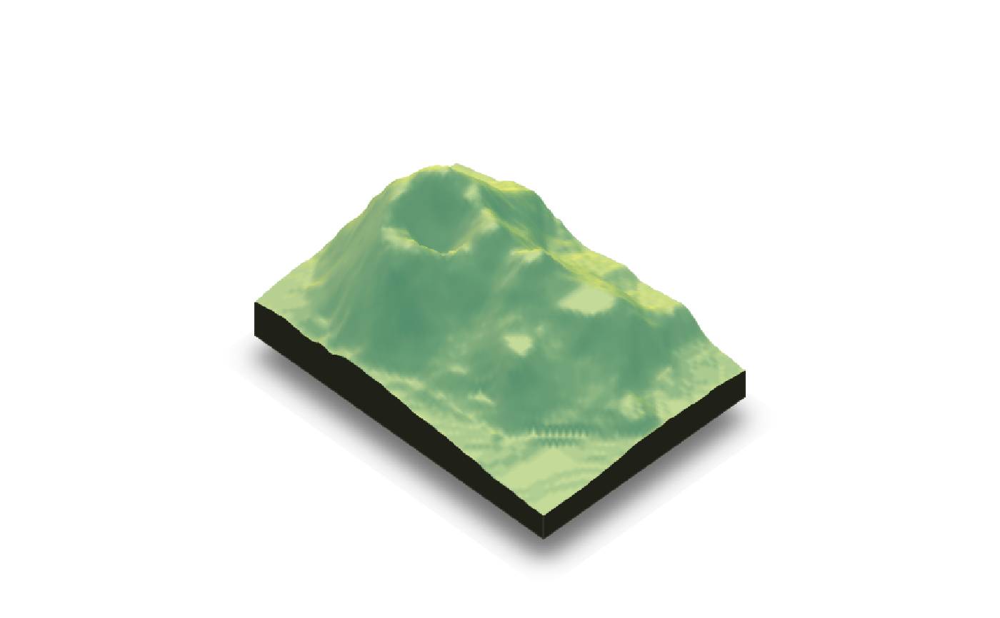

Writes a stereolithography (STL) file that can be used in 3D printing.
save_3dprint(filename, maxwidth = 125, unit = "mm", rotate = TRUE, remove_extras = TRUE, clear = FALSE)
Arguments
| filename | String with the filename. If `.stl` is not at the end of the string, it will be appended automatically. |
|---|---|
| maxwidth | Default `125`. Desired maximum width of the 3D print in millimeters. Uses the units set in `unit` argument. Can also pass in a string, "125mm" or "5in". |
| unit | Default `mm`. Units of the `maxwidth` argument. Can also be set to inches with `in`. |
| rotate | Default `TRUE`. If `FALSE`, the map will be printing on its side. This may improve resolution for some 3D printing types. |
| remove_extras | Default `TRUE`. Removes non-topographic features from base: lines, water, labels, and the shadow. |
| clear | Default `FALSE`. If `TRUE`, the current `rgl` device will be cleared. |
Value
Writes an STL file to `filename`. Regardless of the unit displayed, the output STL is in millimeters.
Examples
save_3dprint(filename_stl, clear=TRUE)#>#Save the STL file into `filename_stl`, setting maximum width to 100 mmsave_3dprint(filename_stl, maxwidth = 100, clear=TRUE)#>#'#Save the STL file into `filename_stl`, setting maximum width to 4 inchessave_3dprint(filename_stl, maxwidth = 4, unit = "in", clear=TRUE)#>#'#'#Save the STL file into `filename_stl`, setting maximum width (character) to 120mmsave_3dprint(filename_stl, maxwidth = "120mm", clear=TRUE)#>